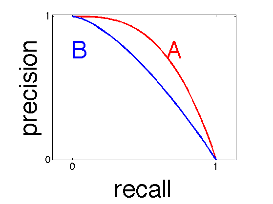

Precision-recall curve for two hypothetical classifications systems.
A is better than B.
% This file is from pmtk3.googlecode.com domain = 0:0.01:1; fA = @(x)1-(x.^(3)); fB = @(x)1-(x.^(3/2)); linewidth = {'LineWidth',3}; hold all; plot(domain, fA(domain),'-r', linewidth{:}); plot(domain, fB(domain),'-b', linewidth{:}); axis([0,1,0,1.01]); axis equal set(gca, 'XTick', [0,1], 'YTick', [0,1], 'FontSize', 20); xlabel('recall', 'fontsize', 50); ylabel('precision', 'fontsize', 50); box on; %A annotation(gcf, 'textbox', [0.6 0.75 0.06254 0.08795], 'String', {'A'},... 'FontSize' , 50 ,... 'FitBoxToText' , 'off' ,... 'LineStyle' , 'none' ,... 'Color' , [1 0 0] ); % B annotation(gcf, 'textbox', [0.25 0.75 0.06254 0.08795], 'String', {'B'},... 'FontSize' , 50 ,... 'FitBoxToText' , 'off' ,... 'LineStyle' , 'none' ,... 'Color' , [0 0 1] ); printPmtkFigure PRhand;